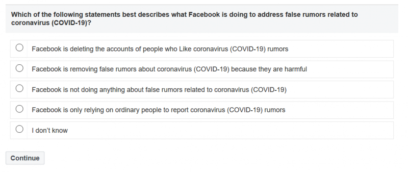

Как Китай воевал с коронавирусом на Уханьском рынке морепродуктов
Hello!LiveJournal categorization system detected that your entry belongs to the following categories: Коронавирус, Медицина.If you think that this choice was wrong please reply this comment.Your feedback will help us improve system.Frank, LJ Team
Posted On: 2020-05-19T08:41:00
Posted By: lj_frank_bot
Хочется надеяться, но слабо верится, что Поднебесную и всех остальных виновных ждет что-то типа Нюрберского процесса.
Posted On: 2020-05-19T08:52:00
Posted By: Vita Violett
Проблема в статье обозначена верно, но даже не намечены возможные пути её решения.Хорошо хоть начали обсуждать, хотя, судя по комментам, очень мало кто считает проблему - проблемой, а зря.
Posted On: 2020-05-19T10:51:00
Posted By: leonid_shvedov
Бесконечная ложь - характерная черта всех антинародных структур - что в Америке, что в Китае, что в Рф.В этом отношении (да и в большинстве прочих) демпартия США ничем не отличается от путинского режима или от КПК.А CNN - от RT или Женьминь жибао.
Posted On: 2020-05-19T09:52:00
Posted By: het1
Тем не менее самая наглая фейкометная ложь идет из тудеи.
Posted On: 2020-05-20T10:35:00
Posted By: rustem_akhunov
31 декабря 2019 г. Ши Чженьли начинает проверку своей лаборатории на предмет возможной утечки из нее коронавируса.По ее собственным словам, она «ждала этого события последние 16 лет».Судя 'по ее собственным словам', еще 16 лет назад у нее был этот вирус и она 'бедняжка' все ждала, ну когда же он вырвется на свободу из стен лаборатории.Раз ждала, значит не исключала, что дождется и знала, что ждать и откуда.
Posted On: 2020-05-19T10:11:00
Posted By: alfasting
Hello!Your entry got to top-25 of the most popular entries of Russia in LiveJournal!Learn more about LiveJournal Ratings in
Posted On: 2020-05-19T10:32:00
Posted By: livejournal
'Basic research involving passage of bat SARS-CoV-like coronaviruses in cell culture and/or animal models has been ongoing for many years in biosafety level 2 laboratories across the world, and there are documented instances of laboratory escapes of SARS-CoV.We must therefore examine the possibility of an inadvertent laboratory release of SARS-CoV-2.'
Posted On: 2020-05-19T10:40:00
Posted By: kostau
вот верное примечание, 'по всему миру вирусом подобным ковид-19' баловались все кому не лень, годами, если уже не десятилетиями, рвануть должно было рано или поздно, произошло ли это в Китае или США абсолютно не важно, результат один и тот же, если произошло бы в США - замели бы под сукно, также как и в Китае, ведь делали подобное не один раз.
Posted On: 2020-05-20T03:35:00
Posted By: konstantinnew
Как с коронавирусом воюет Фейсбук:
Не отвечающие линии Партии факты - это не более чем 'слухи', и всеобязательно 'ложные'.Об отрицательной роли самого Фейсбука вопрос, разумеется, не стоит в принципе.Она, по результатам 'опроса', может быть лишь позитивная или очень-очень позитивная. )
Posted On: 2020-05-19T10:52:00
Posted By: selbstdenken
есть еще вариант - 'Чрезвычайно Нейтральная', фейсбуку понравится :)
Posted On: 2020-05-20T03:37:00
Posted By: konstantinnew
А других/дополнительных источников информации о том, где первоначально был введен карантин в Ухани, кроме заявления и.о. директора института Дальнего Востока РАН Алексея Маслова, не существует?Он не сообщает, откуда ему это известно.
Posted On: 2020-05-19T12:23:00
Posted By: suslik1971
По всей видимости, как и в вопросах клонирования, власти КНР создали режим наибольшего благоприятствования для эксперименов в вирусологии: выдали негласный карт-бланш делать любые модификации вирусов, что угодно.Для чего?Чтобы тем самым иметь у себя самые передовые знания и технологии.Заманить к себе самых передовых ученых.И это сыграло с ними злую шутку, потому что китайские лаборатории стали площадками для рискованных экспериментов, финансируемых всевозможными международными авантюристами с бездонными финансовыми возможностями.Похоже, эти эксперименты китайское руоводство до конца не контролировало и до конца не понимало их смысл.Можно с большой уверенностью сказать, что в УИВ проводились эксперименты с модификацией вирусов, неизвестных иммунной системе человека, но способных передаваться от человека к человеку.Неизвестность вируса иммуной системе человека делает его намного более патогенным для людей с ослабленным иммунитетом, чем давно известные вирусы гриппа и сезонной простуды, к которым люди даже со слабой иммунной системой как-то приспособились.Для чего проводились эти работы, каковы промежуточные и конечная их цель, должно дать всестороннее расследования деятельности лабораторий и вирусологов.Вполне возможно, что утечка вируса из лаборатории была намеренной чтобы поставить эксперимент на людях.Возможно, те кто это спланировал, расчитыывали, что эпидемия ограничится только Уханем или небольшим регионом и вирус сумеют купировать в очаге как это было с предыдущими вирусами, а полученных данных хватит для анализа.Власти КНР и в самом деле стали делать все для купирования эпидемии в очаге, но из-за опасений, что другие страны могут прекратить сообщение с КНР, что может усугубить начавшуюся рецессию, КНР стали использовать свое влияние (коррупционное?)на ВОЗ, чтобы с помощью ВОЗ преуменьшать опасность и вводить другие страны в заблуждение.В то время как вирус благодаря длинному инкубационному периоду вышел за пределы КНР и распространился по всему миру.
Posted On: 2020-05-19T12:25:00
Posted By: Stanislav Samolenkov
В Китае сейчас 34 новых локальных вспышки на северо-востоке, там вводятся местные карантины - подозревают, что завезли приезжие из России https://www.bloomberg.com/news/articles/2020-05-18/over-100-million-in-china-s-northeast-thrown-back-under-lockdown
Posted On: 2020-05-19T14:12:00
Posted By: fluorent

Content Date: 2020-05-19
Download Date: 2021-03-17
Document ID: L0C0495JU